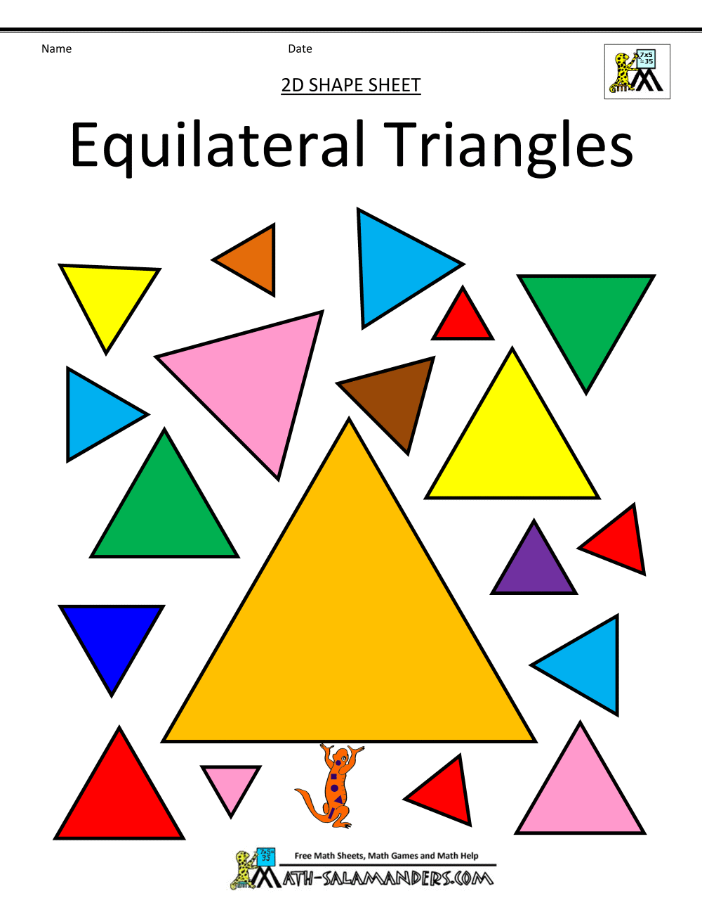
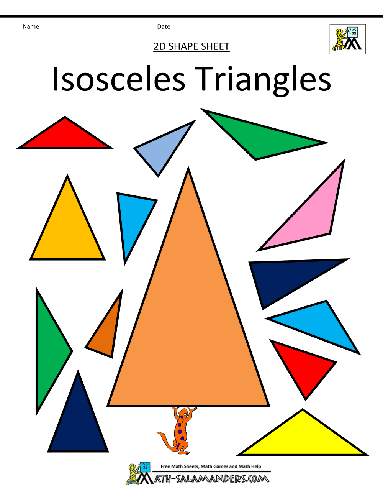
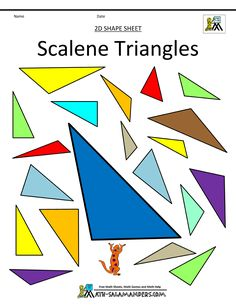

TRIGONOMETRY MADE EASY

BEGINNER TUTORIAL
Let's have some fun creating triangles! Depending on your input, you can create an Equilateral, Isosceles or Scalene triangle. Try it below. Click the Answer button for your results.
Enter the dimensions of side AB (cm/m):
Enter the dimensions of side AC (cm/m):
Enter the dimensions of side BC (cm/m):
Check out the triangles below:


